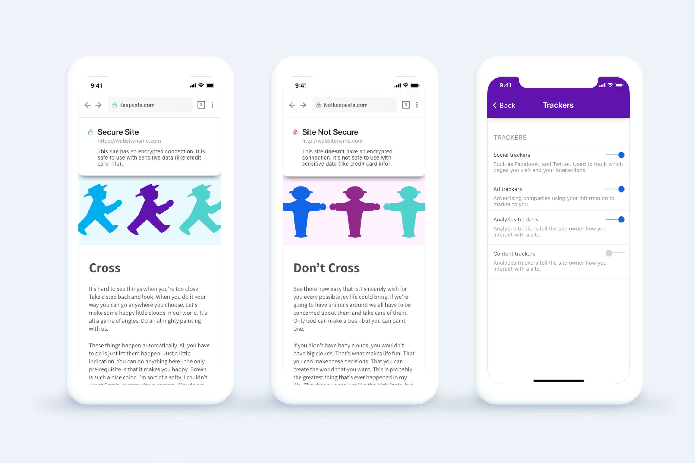
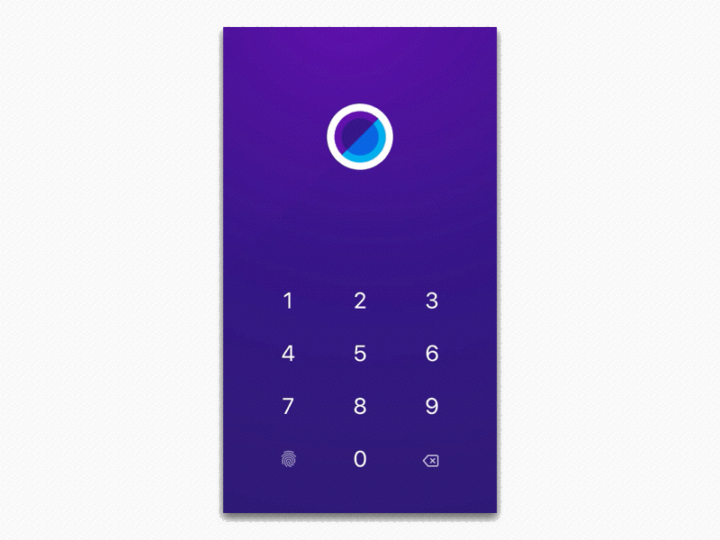
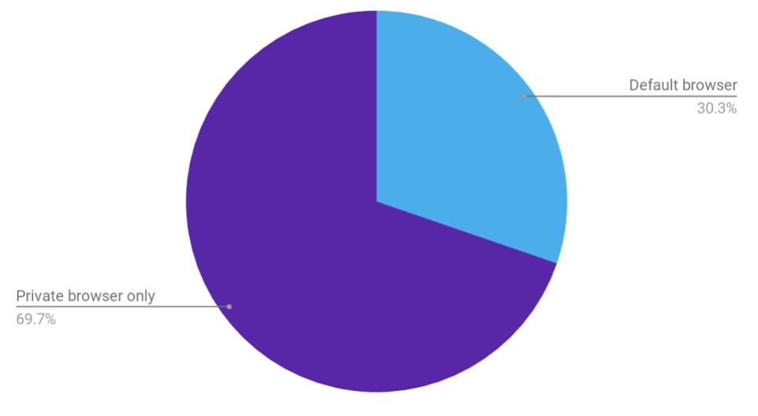

KEEPSAFE BROWSER
Keepsafe Browser
50k users
4.7 stars, 1.1K Ratings on the App store
4.2 stars, 486 ratings on the Play store
Keepsafe Browser is a private browsing app for native iOS and Android I designed for Keepsafe starting in March of 2018 through September 2018. At that time, Keepsafe was creating a suite of privacy apps that interact with each other to create a private ecosystem on your phone. The suite was to build on the original app - Photo Vault, which is an app for keeping photos private. The company had recently added a VPN product, and Unlisted - which allows the user to have a private phone number.
Keepsafe's suite of privacy apps: Photo Vault, Unlisted, VPN and Browser
The goal of Keepsafe Browser was to allow users to search the web privately, as well as to integrate with the other privacy products by letting users save photos directly to Photo Vault.
I was the lead designer on this project, and worked with two project managers, an Android engineer, and an iOS engineer. The majority of the team was located in Berlin, so I traveled there several times to work with them.

How to test privacy products?
Immediately, I knew my biggest challenge with this project would be getting user input. Firstly, we didn’t have a user base because the app did not exist yet. Secondly, people naturally don’t want to talk about what they use a private browser for, and it was hard to dig into users’ motivations, as I usually would, without making them uncomfortable.
I began by creating a survey about private browsing that would go out to Photo Vault users. This survey covered general demographics and private browsing behavior. The vast majority of users’ use cases were served by private tabs on Chrome or Safari, but some were interested in a separate browser.
I then contacted those users who said they would be interested in a separate private browser and scheduled phone interviews with them. In the phone interviews, I asked about their previous history with private browsing, what their motivations were, and what they would like to see in a browser from Keepsafe. In addition to asking Photo Vault users, we also spoke to some acquaintances who told us they would be interested in talking about private browsing.
These interviews created a dilemma for us: All the people we spoke to were much more tech savvy and data-privacy focused than the average consumer. We chalked this up to the fact that anyone who wanted to talk to us about this issue was likely predisposed to be looking for this type of solution and, thus,more technically minded.
A "burn tab" concept I played with
Who is this app for?
Our testing told us that our user was someone very technically savvy who had a high level of concern and knowledge about his or her data privacy, but we had doubts about whether this was the person we wanted to design for. This usertype is not one that Keepsafe typically serves, and they are harder to find.
Doing research for this product, we realized there are really two kinds of privacy: One is “data privacy” - keeping your search habits away from advertisers. The other is physical privacy - keeping your browsing habits away from your family and friends who can either see your phone or your search history.
We deliberated back and forth on whether we wanted to focus on the “data privacy users” or “physical privacy users.” There were significant differences in what kinds of features we would focus on. Unlike the data-privacy users, the physical privacy people might like to keep their history and cookies stored for the next time they use the app. This type of person would be more interested in a regular browser with a PIN code and other privacy features that Keepsafe used in Photo Vault. We knew this user type existed because they are the types of people who use Photo Vault, but we had not actually heard from them related to private browsing.
Decisions
We decided to create an app that was “like Photo Vault”, but for browsing, which catered to the physical privacy user while still having some data privacy features (such as being able to block trackers and surf without history). These features allow the user to feel more comfortable with the app knowing that their searches are truly private. It also provides “plausible deniability” in case anyone asks why they have a private browser.
The app includes an optional PIN screen to keep anyone who knows your phone PIN out of the app. From testing, we heard a lot of people expressing concern about their children looking at other apps if they let them use their phones momentarily.
The app allows users to search in both regular and private mode. Both modes are more secure than other browsers in terms of data privacy, but the private mode does not save your searches to autocomplete, nor does it keep users logged in.

Toggling between regular and private mode
Users also have the option to “hide” secret tabs after 30 seconds of inactivity. This means that if they open up the app around people their last embarrassing search won’t be front and center. The tabs are still findable in the tabs screen.
It also provides a bit of extra information about the privacy of websites to curious users.
Extra information on whether a site is secure or not, and a description of the kind of trackers blocked
We also added a tracker counter so users could see how many trackers they had blocked by using the app.
Users can see how many trackers have been blocked. Our wonderful iOS developer Daniel Jilg did an amazing job on this and the balls roll when you tilt your phone!
The team also created a built-in VPN for the app. This would give users privacy on their wireless networks, and allow them to bypass some firewalls.
Connecting to VPN for the first time
Connection snackbar on iOS & Android
Sprucing it up
One important part of designing this app was making it attractive and fun to use. There are a lot of private browsers out there, and we wanted to differentiate ourselves with UX and our playful brand voice.
I created a logo that would interact with the PIN screen to make it feel like the unlocking of a vault.
The animation of the logo
The PIN screen opening
I played with this unlocking circular concept in other places in the app as well.
The animation for a broken connection to the VPN
The pull to refresh animation
How are people using the app?
The problem with the app being truly private is that we did not track what the users did at all. So, after launching, I came up with a way to measure this data.
I had learned from the previous round of testing that the best way to get honest answers from people is to make the testing as impersonal as possible. I carefully crafted a survey to infer as much information as possible from the users.
The survey gave us an excellent idea of how people were using the app, and our users were wonderfully honest. Unsurprisingly, the users were using it mainly as a second app to search their more private things.
{kind=link}
The percentage of users who were using the app as their default browsing app, vs using it for only private searches
Some of the users from the survey agreed to speak to me on the phone. I used this opportunity to get more specific insights into how these were using the app, and what made them use it over other products.
I will not share too many specifics here because I value my users’ privacy, but we found that our app gave users a sense of security and privacy they hadn’t felt with other apps. It allowed our users to separate parts of their life that they were actively engaged with. For example, they separated work or school from personal searches on a company phone. Some users were using the app to be active on community boards for sensitive personal issues, and help others going through the same things.
These were some responses to the question "Does Keepsafe Browser allow you do anything that wasn't possible before?"
"I am able to search more securely."
"I feel like no is looking over my shoulder at what I'm doing on the internet."
"It allows me to sort of be myself. It’s a weird thing to say, but I feel like with your app I can just look for what I’m looking for and not feel vulnerable doing it."
Conclusion
I’m very happy with the app that we created. It was difficult to decide what to focus on and the scope because of the private nature of the app, but in the end we created a delightful app that is well-liked by users!